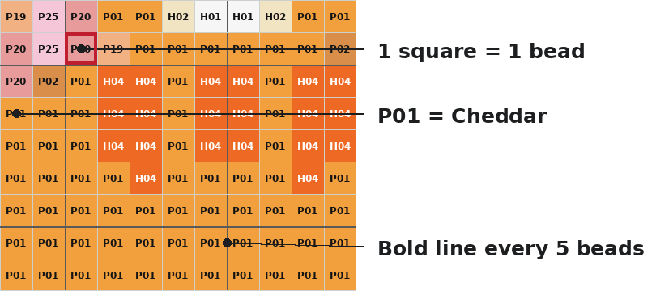
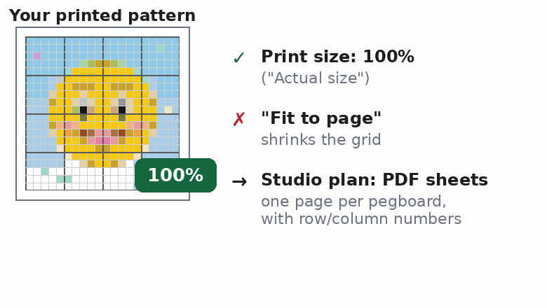

De la photo à la pièce finie — le guide complet
Tout au même endroit : choisir une photo qui se convertit bien, décider de la largeur, lire le modèle, corriger les couleurs à la main et choisir le bon format d’export. Première fois avec les perles à repasser ? Commencez à l’étape 1 et suivez le fil.
1 Choisir une bonne photo
Choisissez une image avec un seul sujet net, un fond uni et un fort contraste. Visages, animaux, logos et dessins animés donnent les meilleurs résultats. Les scènes chargées de petits détails se mélangent à la taille d’une perle — si votre photo est chargée, recadrez serré autour du sujet.

2 Régler la largeur
La largeur est le nombre de perles de votre pièce finie ; la hauteur suit automatiquement les proportions de la photo. Plus de perles = plus de détail, mais aussi plus de perles, de temps et de coût. Repères : porte-clés 20–30 de large ; un dessous de verre fait exactement une plaque, soit 29 ; pièces de bureau 40–60 ; pièces murales 80+. Les perles midi standard font 5 mm, donc 29 perles ≈ 14,5 cm.

3 Lire le modèle
Chaque carré est une perle. Le code imprimé dans chaque cellule (comme P01) est le code couleur de cette perle — le même que dans la liste d’achats. Les lignes épaisses toutes les 5 perles permettent de compter de cinq en cinq. La grille et les codes s’activent ou se désactivent au-dessus du modèle.

4 Acheter les perles avec la liste
Sous votre modèle se trouve la liste d’achats : chaque couleur avec son code, son nom et son compte exact, le nombre total de perles et le nombre de plaques standard 29 × 29 nécessaires. Prévoyez environ 10 % de plus par couleur — quelques perles roulent toujours au loin.

5 Télécharger, imprimer & assembler
Téléchargez le modèle en PNG et assemblez depuis votre écran, ou imprimez-le. À l’impression, choisissez 100 % / « Taille réelle » — « Ajuster à la page » réduit la grille et elle ne correspond plus à votre plaque. Avec l’offre Studio, les feuilles PDF découpent les grands modèles en une page par plaque, avec numéros de lignes et de colonnes. La finition : couvrez la pièce de papier sulfurisé et repassez à feu moyen en cercles lents jusqu’à ce que le haut des perles fonde et se soude. Laissez refroidir à plat — un livre lourd dessus évite qu’elle ne gondole.

6 Corriger les couleurs à la main
La correspondance automatique est bonne, mais elle ne peut pas savoir que les yeux du chat doivent être verts. Sous votre modèle, la palette d’édition contient toutes les couleurs de votre offre. Choisissez une couleur, puis touchez — ou faites glisser sur — les cellules à repeindre.
La gomme vide une cellule (aucune perle). Annuler — ou Ctrl+Z — revient en arrière, trait par trait. La liste de perles et les totaux se recalculent après chaque modification : ce que vous voyez est exactement ce qu’il faut acheter. L’édition de cellules est gratuite sur toutes les offres.
7 Les formats d’export, expliqués
| Format | Idéal pour | Offres |
|---|---|---|
| Modèle PNG | Assembler depuis l’écran ou partager le modèle | Toutes les offres (filigrane discret en Free) |
| Liste de perles CSV | Une liste d’achats imprimable | Pro et Studio |
| Liste de perles XLSX | La liste en tableur — trier, filtrer, partager | Pro et Studio |
| Modèle SVG | Un modèle vectoriel pour les outils de design et l’impression | Pro et Studio |
| Feuilles PDF par plaque | Une page imprimée par plaque, avec coordonnées | Studio |
| Génération par lot | Convertir plusieurs photos en une fois | Studio |
8 Tailles, plaques & impression — les chiffres
- Taille des perles : les perles midi standard font 5 mm ; largeur finie = perles en largeur × 5 mm.
- Plaques : la plaque standard fait 29 × 29 perles ; l’outil estime combien il en faut.
- Largeurs : jusqu’à 48 perles en Free, 120 en Pro, 200 en Studio.
- Palette : 64 couleurs en Free ; la palette complète de 100 couleurs Perler + Hama + Artkal en Pro et Studio.
- Impression : toujours 100 % / Taille réelle — un carré imprimé doit égaler une perle.
- Confidentialité : tout fonctionne dans votre navigateur. Les photos ne sont jamais envoyées et il n’y a aucun compte.
FAQ du guide
Combien de perles et de plaques me faudra-t-il ?
La liste d’achat sous votre motif compte chaque couleur exactement, plus le nombre total de perles et le nombre de plaques standard 29 × 29 nécessaires. Par exemple, le motif du chat ci-dessus demande 1 600 perles en 21 couleurs et 4 plaques. Astuce : achetez environ 10 % de plus de chaque couleur — quelques perles roulent toujours au loin.
Ma photo est-elle envoyée sur un serveur ?
Non. Tout fonctionne en local dans votre navigateur — votre photo ne quitte jamais votre appareil, rien n’est stocké, et il n’y a aucun compte. Fermez l’onglet et tout disparaît.
Quelle est la différence entre Gratuit, Pro et Studio ?
Gratuit : motifs jusqu’à 48 perles de large, palette de base de 64 couleurs, et exports PNG avec un petit filigrane. Pro ($4.99/mois) : jusqu’à 120 de large, palette complète de 100 couleurs, exports sans filigrane et liste de perles CSV téléchargeable. Studio ($9.99/mois) : jusqu’à 200 de large, planches PDF imprimables, génération par lot et licence commerciale. Voir les tarifs ci-dessus pour la comparaison complète.
Pourquoi mon PNG téléchargé a-t-il un filigrane ?
Les exports de l’offre gratuite portent une petite bande « Made with Bead Pattern Maker » en bas, pour que les gens trouvent l’outil. Les exports Pro et Studio sont complètement propres.
Ma grille imprimée ne s’aligne pas avec ma plaque. Qu’est-ce qui cloche ?
Votre imprimante a mis la page à l’échelle. Réimprimez à 100 % / « Taille réelle » et désactivez « Ajuster à la page » — un carré imprimé doit égaler une perle. Ou réalisez simplement depuis l’écran, ou utilisez les planches PDF de Studio, paginées pour correspondre à une plaque par page avec numéros de rangées et de colonnes.
Puis-je l’utiliser sur mon téléphone ?
Oui — ça fonctionne dans tout navigateur mobile moderne, et vous pouvez l’installer comme une appli (cherchez « Ajouter à l’écran d’accueil ») ; ensuite, ça fonctionne même hors ligne. Vos photos restent sur votre téléphone, exactement comme sur un ordinateur.
Faut-il un compte ou une inscription ?
Non. Aucun compte, rien à installer — ouvrez la page et commencez. Si vous passez à une offre payante, votre clé de licence reste stockée sur votre seul appareil.
À quelles marques de perles les couleurs correspondent-elles ?
La palette suit les codes couleur standard Perler / Hama — chaque couleur porte son code et son nom (par exemple H05 Red), pour acheter exactement les perles du modèle.
Puis-je vendre les pièces réalisées avec ces modèles ?
Oui avec l'offre Studio, qui inclut une licence commerciale. Les offres Free et Pro sont réservées aux projets personnels.
Puis-je corriger une couleur mal choisie par l’outil ?
Oui. Sous votre modèle, choisissez une couleur de la palette et touchez les cellules à changer — ou utilisez la gomme pour vider une cellule. La liste d’achats se recalcule après chaque modification, et Annuler revient pas à pas sur vos changements.
Prêt à créer le vôtre ?
Ouvrez l’outil, déposez une photo, et votre premier modèle est à environ une minute.